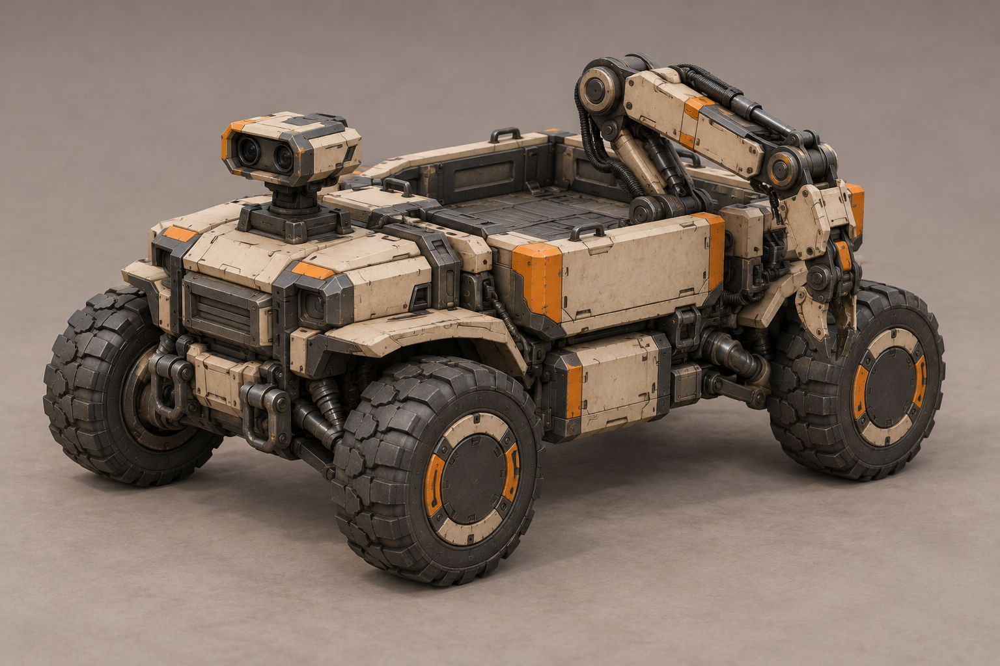
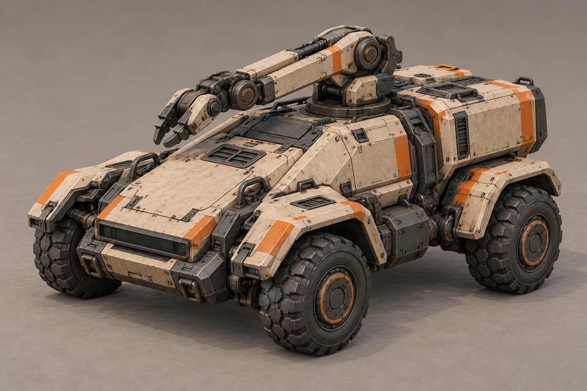
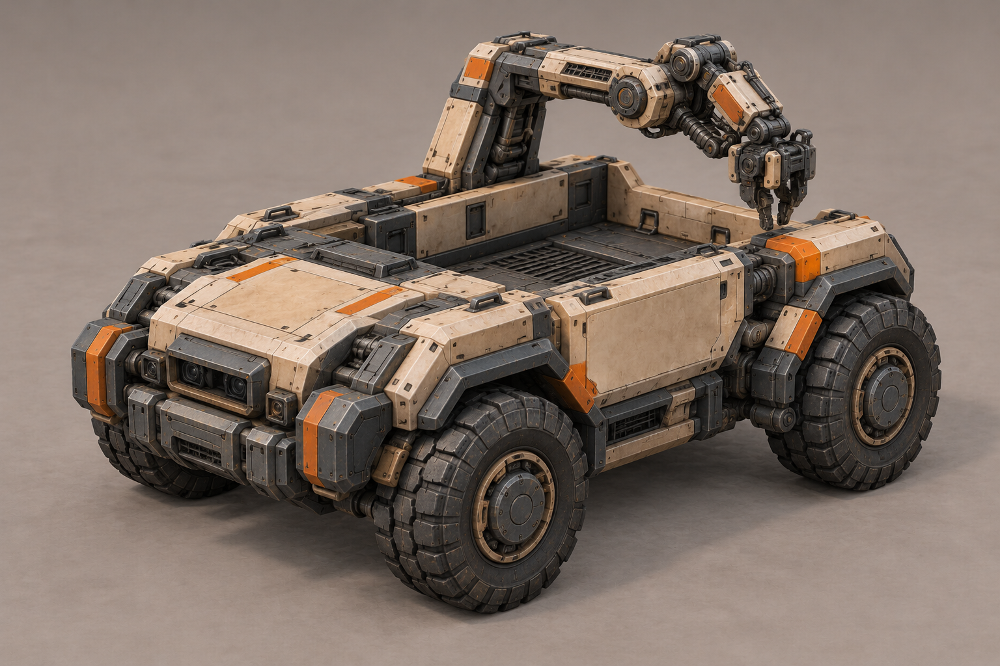
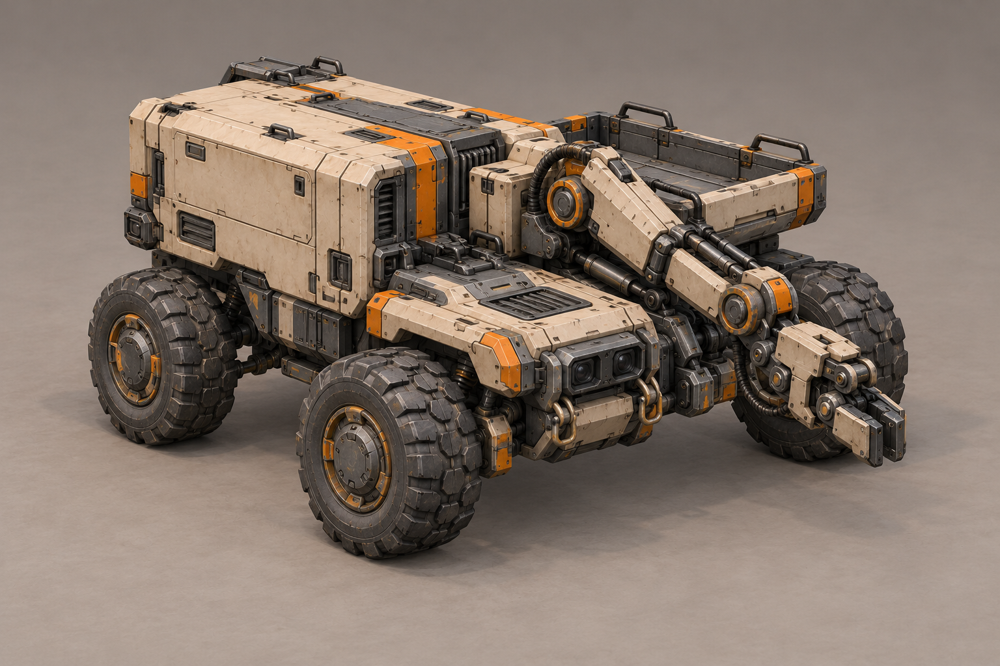
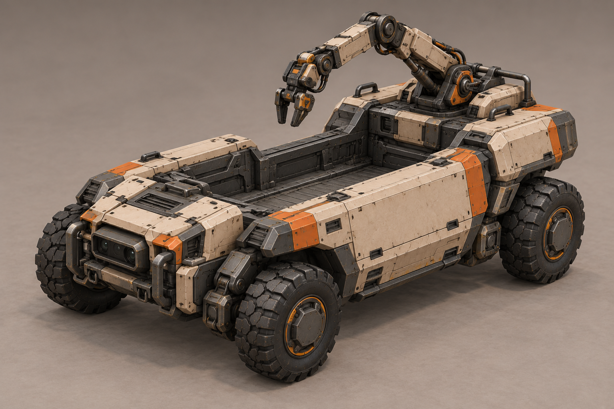
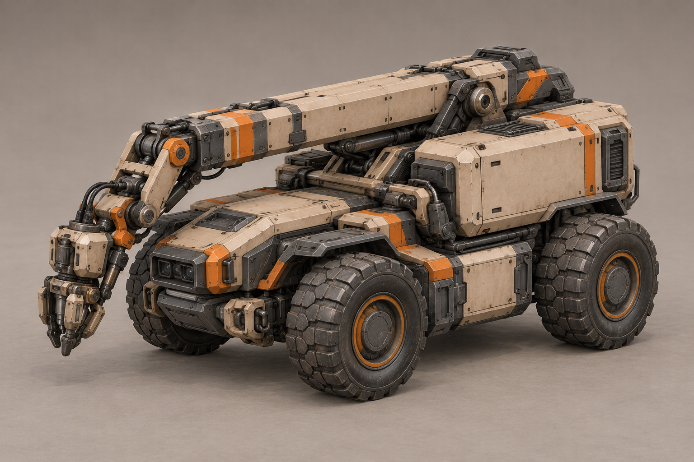
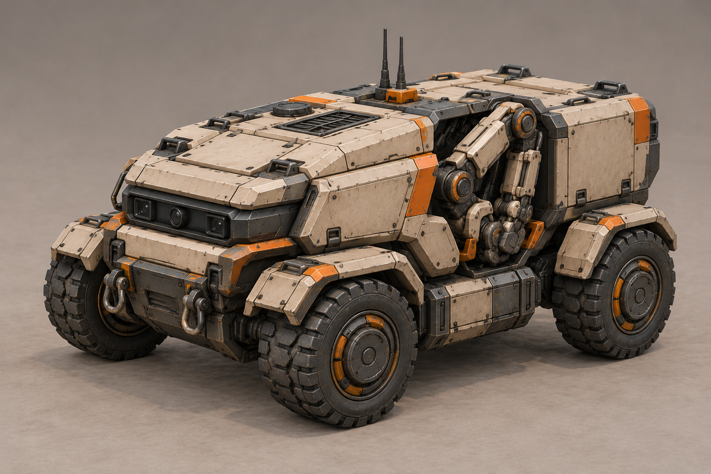
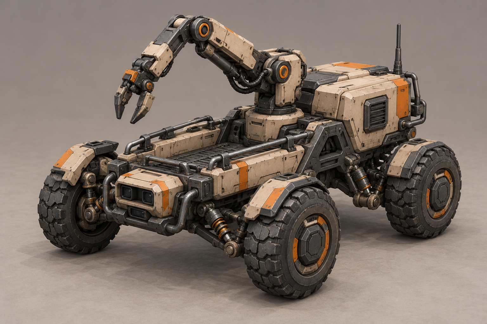

Актуален второй проход: гусеницы, передняя центральная рука и задний кузов. Колёсные варианты ниже — история идей; прежнее требование четырёх колёс заменено решением автора 2026-10-29. Гусеничный проход A–D
Рабочий-дрон людей · A–H
29 октября 2026 · первый юнит в последовательном проходе людей
Все восемь — предложения внешности, выбор автора ещё не сделан. Четырёхколёсный беспилотный инженерный дрон; добыча, строительство, ремонт и контактная атака следуют DESIGN.md. Размер кузова, число инструментов и форма руки не меняют скорость добычи, вместимость, урон или правила ремонта.
Песочная броня, графитовая конструкция, приглушённая оранжевая краска. Свет и оптика выключены. Неподвижные концепты без рабочих эффектов; это ещё не согласованные модельные входы. Нажмите изображение, чтобы открыть оригинал.
A «Грузовая платформа»

Низкая грузовая платформа, открытый кузов и боковой манипулятор.
Отдельная поворотная сенсорная головка; боковая рука и пустой кузов.
Подготовка после выбора
После выбора: согласовать инструмент для добычи/стройки/ремонта/контактной атаки; разделить шасси, колёса L/R, подвеску, основание руки, плечо, локоть, запястье и инструмент, оптику при наличии поворота. Оси, пределы и зазоры проверить на одной геометрии. Подготовить простой, движение, добычу, возврат/разгрузку, стройку, ремонт, атаку и гибель с событиями и прерыванием по игре. Свечение, пыль, искры и контактные эффекты отдельно. Предлагаемые зоны владельца — парные верхние панели крыльев и боковые панели оборудования/кузова, с задней зоной для чтения сзади; точную раскладку закрепить после выбора. Оранжевые акценты и оптика не являются автоматически цветом игрока. Модель, маски, риг и клипы ещё не созданы; проверка Unity не выполнена.
B «Клин»

Клиновидный корпус, закрытый сервисный блок и сложенный сверху манипулятор.
Низкая оптика в носу, рука над центральной осью, задний закрытый блок.
Подготовка после выбора
После выбора: согласовать инструмент для добычи/стройки/ремонта/контактной атаки; разделить шасси, колёса L/R, подвеску, основание руки, плечо, локоть, запястье и инструмент, оптику при наличии поворота. Оси, пределы и зазоры проверить на одной геометрии. Подготовить простой, движение, добычу, возврат/разгрузку, стройку, ремонт, атаку и гибель с событиями и прерыванием по игре. Свечение, пыль, искры и контактные эффекты отдельно. Предлагаемые зоны владельца — парные верхние панели крыльев и боковые панели оборудования/кузова, с задней зоной для чтения сзади; точную раскладку закрепить после выбора. Оранжевые акценты и оптика не являются автоматически цветом игрока. Модель, маски, риг и клипы ещё не созданы; проверка Unity не выполнена.
C «Портал»

Низкий кузов между боковыми блоками, портальная рама с рабочим узлом.
Высокая портальная рама; в полученном варианте инструмент свисает над кузовом. Компактную походную укладку ещё предстоит согласовать.
Подготовка после выбора
После выбора: согласовать инструмент для добычи/стройки/ремонта/контактной атаки; разделить шасси, колёса L/R, подвеску, основание руки, плечо, локоть, запястье и инструмент, оптику при наличии поворота. Оси, пределы и зазоры проверить на одной геометрии. Подготовить простой, движение, добычу, возврат/разгрузку, стройку, ремонт, атаку и гибель с событиями и прерыванием по игре. Свечение, пыль, искры и контактные эффекты отдельно. Предлагаемые зоны владельца — парные верхние панели крыльев и боковые панели оборудования/кузова, с задней зоной для чтения сзади; точную раскладку закрепить после выбора. Оранжевые акценты и оптика не являются автоматически цветом игрока. Модель, маски, риг и клипы ещё не созданы; проверка Unity не выполнена.
D «Боковой модуль»

Асимметричная компоновка: аппаратный блок слева, рабочая рука справа.
Асимметричный аппаратный блок и вынесенная вперёд рабочая рука. Проверить габарит манипулятора после выбора.
Подготовка после выбора
После выбора: согласовать инструмент для добычи/стройки/ремонта/контактной атаки; разделить шасси, колёса L/R, подвеску, основание руки, плечо, локоть, запястье и инструмент, оптику при наличии поворота. Оси, пределы и зазоры проверить на одной геометрии. Подготовить простой, движение, добычу, возврат/разгрузку, стройку, ремонт, атаку и гибель с событиями и прерыванием по игре. Свечение, пыль, искры и контактные эффекты отдельно. Предлагаемые зоны владельца — парные верхние панели крыльев и боковые панели оборудования/кузова, с задней зоной для чтения сзади; точную раскладку закрепить после выбора. Оранжевые акценты и оптика не являются автоматически цветом игрока. Модель, маски, риг и клипы ещё не созданы; проверка Unity не выполнена.
E «Скоба»

П-образная рама вокруг утопленного грузового отсека.
Открытая центральная ванна; в полученном варианте рука приподнята. Походную укладку ещё предстоит согласовать.
Подготовка после выбора
После выбора: согласовать инструмент для добычи/стройки/ремонта/контактной атаки; разделить шасси, колёса L/R, подвеску, основание руки, плечо, локоть, запястье и инструмент, оптику при наличии поворота. Оси, пределы и зазоры проверить на одной геометрии. Подготовить простой, движение, добычу, возврат/разгрузку, стройку, ремонт, атаку и гибель с событиями и прерыванием по игре. Свечение, пыль, искры и контактные эффекты отдельно. Предлагаемые зоны владельца — парные верхние панели крыльев и боковые панели оборудования/кузова, с задней зоной для чтения сзади; точную раскладку закрепить после выбора. Оранжевые акценты и оптика не являются автоматически цветом игрока. Модель, маски, риг и клипы ещё не созданы; проверка Unity не выполнена.
F «Телескоп»

Компактная телескопическая стрела над низким шасси.
Продольная телескопическая стрела с передним инструментом; проверить вынос и зазоры.
Подготовка после выбора
После выбора: согласовать инструмент для добычи/стройки/ремонта/контактной атаки; разделить шасси, колёса L/R, подвеску, основание руки, плечо, локоть, запястье и инструмент, оптику при наличии поворота. Оси, пределы и зазоры проверить на одной геометрии. Подготовить простой, движение, добычу, возврат/разгрузку, стройку, ремонт, атаку и гибель с событиями и прерыванием по игре. Свечение, пыль, искры и контактные эффекты отдельно. Предлагаемые зоны владельца — парные верхние панели крыльев и боковые панели оборудования/кузова, с задней зоной для чтения сзади; точную раскладку закрепить после выбора. Оранжевые акценты и оптика не являются автоматически цветом игрока. Модель, маски, риг и клипы ещё не созданы; проверка Unity не выполнена.
G «Сервисный фургон»

Закрытый сервисный корпус с манипулятором в боковой нише.
Боковая ниша со сложенной рукой, закрытый аппаратный объём.
Подготовка после выбора
После выбора: согласовать инструмент для добычи/стройки/ремонта/контактной атаки; разделить шасси, колёса L/R, подвеску, основание руки, плечо, локоть, запястье и инструмент, оптику при наличии поворота. Оси, пределы и зазоры проверить на одной геометрии. Подготовить простой, движение, добычу, возврат/разгрузку, стройку, ремонт, атаку и гибель с событиями и прерыванием по игре. Свечение, пыль, искры и контактные эффекты отдельно. Предлагаемые зоны владельца — парные верхние панели крыльев и боковые панели оборудования/кузова, с задней зоной для чтения сзади; точную раскладку закрепить после выбора. Оранжевые акценты и оптика не являются автоматически цветом игрока. Модель, маски, риг и клипы ещё не созданы; проверка Unity не выполнена.
H «Открытая рама»

Открытая силовая рама, видимая подвеска и центральный манипулятор.
Видимая подвеска и центральная рука; в полученном варианте рука поднята, а грузовая площадка имеет борта. Походную укладку ещё предстоит согласовать.
Подготовка после выбора
После выбора: согласовать инструмент для добычи/стройки/ремонта/контактной атаки; разделить шасси, колёса L/R, подвеску, основание руки, плечо, локоть, запястье и инструмент, оптику при наличии поворота. Оси, пределы и зазоры проверить на одной геометрии. Подготовить простой, движение, добычу, возврат/разгрузку, стройку, ремонт, атаку и гибель с событиями и прерыванием по игре. Свечение, пыль, искры и контактные эффекты отдельно. Предлагаемые зоны владельца — парные верхние панели крыльев и боковые панели оборудования/кузова, с задней зоной для чтения сзади; точную раскладку закрепить после выбора. Оранжевые акценты и оптика не являются автоматически цветом игрока. Модель, маски, риг и клипы ещё не созданы; проверка Unity не выполнена.